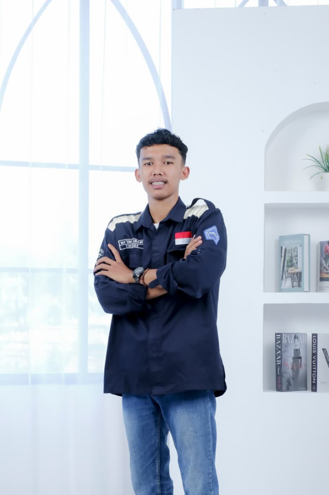
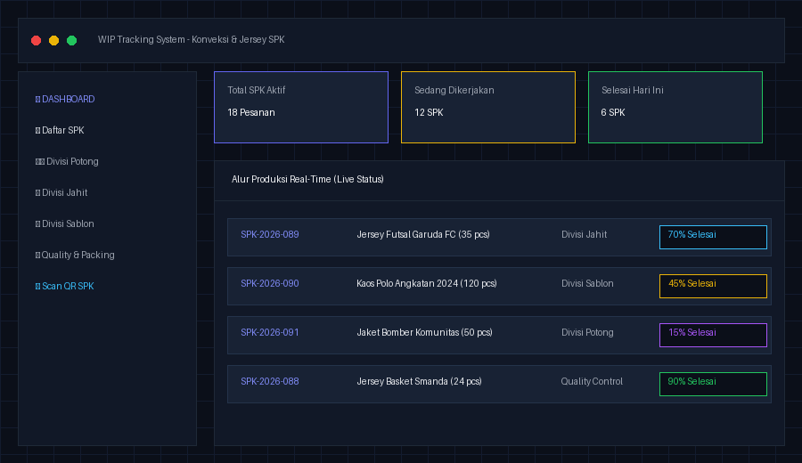
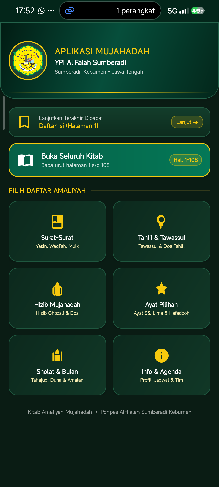
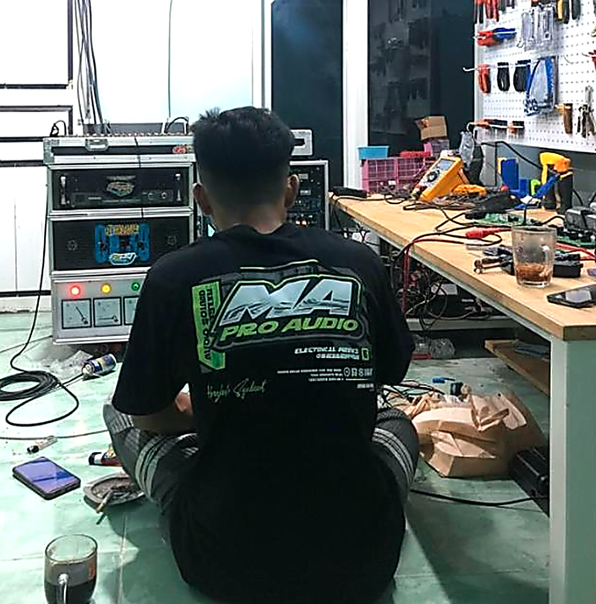

Halo, Saya
Ma'sum Nawawi
Mahasiswa S1 Teknik Informatika UMNU Kebumen & praktisi web. Fokus membangun sistem dan aplikasi fungsional yang menyelesaikan masalah nyata—mulai dari pelacakan alur produksi konveksi hingga digitalisasi komunitas pesantren.

Sistem & Aplikasi Nyata Dibangun
IPK Akademik Teknik Informatika
Sektor Usaha & Komunitas Terdampak
Fokus Solutif & Siap Kolaborasi
Tentang Ma'sum Nawawi
Menerjemahkan ide dan tantangan operasional menjadi arsitektur sistem digital yang rapi dan mudah digunakan.
Siapa Saya?
Saya adalah mahasiswa S1 Teknik Informatika Semester 5 di Universitas Ma'arif Nahdlatul Ulama (UMNU) Kebumen dan santri di PonPes Al Falah, Somalangu.
Berangkat dari latar belakang SMK Multimedia dan kecintaan pada eksplorasi teknologi, saya memiliki kombinasi unik: pemahaman logika arsitektur sistem (backend & database) yang dibalut dengan kepekaan estetika visual antarmuka pengguna.
Jejak Langkah & Pengalaman
S1 Teknik Informatika — UMNU Kebumen
Fokus studi Manajemen Basis Data, Pemrograman Web/Sistem Informasi, dan Technopreneurship. IPK Berjalan: 3.81 / 4.00.
Balai Latihan Kerja (BLK) Kebumen
Praktik Kerja Lapangan (PKL) Media & Administrasi Digital: Pengelolaan arsip aset digital dan publikasi instansi.
Syifana Vision Kebumen
PKL Dokumentasi & Media Kreatif: Manajemen peralatan visual, produksi media, dan penataan arsip file digital.
SMK Al Falah Sumberadi
Jurusan Multimedia: Pondasi desain grafis, editing video, dan dasar komputasi terstruktur.
Portofolio Showcase
Setiap projek lahir dari masalah nyata di lapangan, dirancang dengan dedikasi penuh dari perencanaan hingga eksekusi.

Sistem WIP Tracking Produksi Konveksi & Jersey
Aplikasi web pelacakan alur kerja (Work-in-Progress) dan Surat Perintah Kerja (SPK) multi-divisi (potong, jahit, sablon) berbasis pemindaian QR Code real-time.

Aplikasi Mobile & Web Doa Mujahadah Al Falah
Digitalisasi buku dzikir & amalan santri PonPes Al Falah Somalangu ke dalam aplikasi praktis yang responsif, dilengkapi navigasi daftar isi cepat saat ziarah maupun rutinitas ibadah.

Website Profil & Service MA PRO AUDIO
Website branding interaktif untuk layanan sound system hajatan, servis audio balap, dan kelistrikan. Dilengkapi kalkulator estimasi dan formulir konsultasi langsung via WhatsApp.
Tech Stack & Kemampuan Teknis
Kombinasi perangkat keras, arsitektur backend, antarmuka visual, dan pola pikir solutif.
Backend Engineering & Database
Membangun alur logika server, RESTful API yang aman, serta manajemen basis data terstruktur.
Frontend & UI Design
Antarmuka responsif, modern dark mode, dan UX yang ramah pengguna.
Integrasi & Workflow Tools
Peralatan penunjang pengembangan software yang teruji dan efisien.
Pola Pikir & Nilai Tambah (Soft Skills)
Kelebihan utama yang membedakan dari sekadar programmer kode kaku.